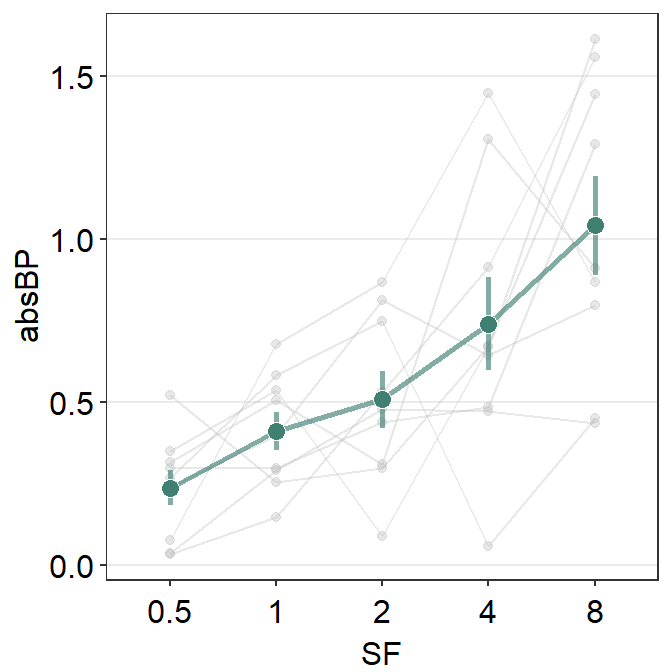
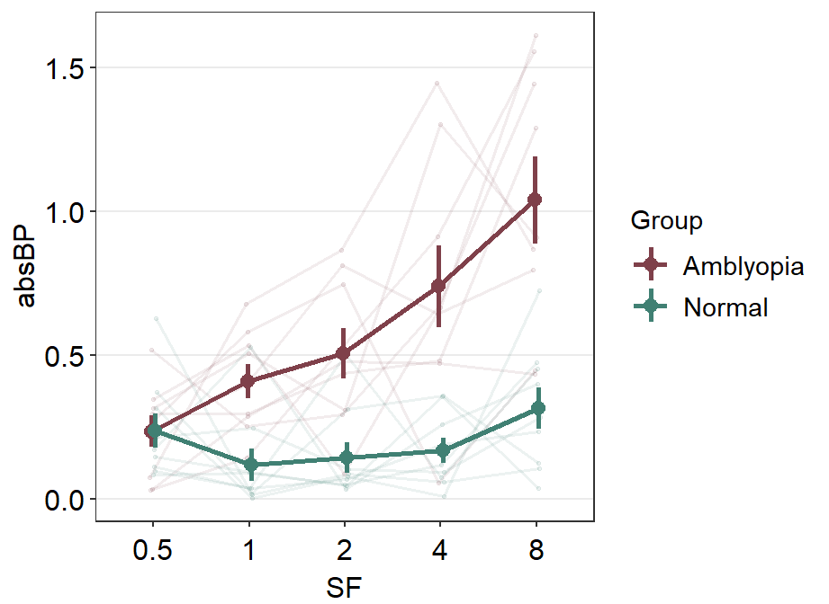
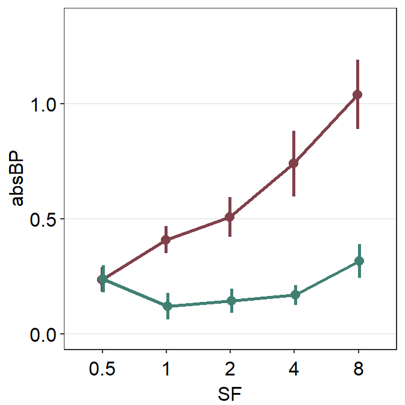

Chapter 5 Combining Plots with Common Axes
First, you need to load data (.csv file). When you are loading your own .csv file for your data analysis, make sure you place the .csv file of your interest in the folder that has been set to the working directory.
In this example, we will be using data from this paper:
Seung Hyun Min, Alex S. Baldwin and Robert F. Hess. Ocular dominance plasticity: A binocular combination task finds no cumulative effect with repeated patching (2019). Vision Research, 161, 36-42.
We will be creating similar figures to those in the paper (ex. Figure 3A and Figure A2) using smplot. For the PDF copy, please visit this link.
library(tidyverse)df <- read_csv('https://www.smin95.com/min2019.csv')df$Day <- factor(df$Day)
head(df)## # A tibble: 6 x 4
## Subject Day Time Cbratio
## <chr> <fct> <dbl> <dbl>
## 1 S1 1 0 -0.421
## 2 S2 1 0 2.82
## 3 S3 1 0 1.69
## 4 S4 1 0 2.55
## 5 S5 1 0 -0.217
## 6 S6 1 0 0.626There are four columns in this data frame:
First,
Subjectrefers to each participant. There are 10 participants total.Next,
Dayrefers to the day of testing. The participants were tested on Day 1, 2, 3, 4 and 5. We will only use Day from 1 and 5.Timerefers to the number of minutes after an experimental manipulation (ex. monocular deprivation). These are 0, 3, 6, 12, 24 and 48 minutes, but in the data frame, it says 0, 1, 2, 3, 4 and 5; we will change the labels manually.The
Cbratiocolumn refers to the actual data that will be plotted here.
In the example below, the plots will have different colors based on Day (1 or 5). Therefore, the values in Day column have to be discrete, not continuous. To make them discrete, one needs to convert the Day column from double (continuous variable) to factor (discrete variable).
5.1 filter(), select() and summarise()
5.1.1 filter() for rows
To plot data of each subject separately, we need the data frame to show data only from one subject. This can be achieved as using filter():
filter(df, Subject == 'S1')## # A tibble: 12 x 4
## Subject Day Time Cbratio
## <chr> <fct> <dbl> <dbl>
## 1 S1 1 0 -0.421
## 2 S1 1 1 0.802
## 3 S1 1 2 1.01
## 4 S1 1 3 0.634
## 5 S1 1 4 -0.245
## 6 S1 1 5 -0.834
## 7 S1 5 0 2.42
## 8 S1 5 1 1.76
## 9 S1 5 2 1.91
## 10 S1 5 3 0.609
## 11 S1 5 4 0.811
## 12 S1 5 5 0.363- The first argument of
filter(),select(),summarise()andmutate()is a data frame. - The subsequent argument specifies how the data frame should be treated.
- The new printed result is a new data frame.
filter() is used to filter for rows that meet the requirement of your interest.
Here is another example.
filter(df, Day == 1)## # A tibble: 60 x 4
## Subject Day Time Cbratio
## <chr> <fct> <dbl> <dbl>
## 1 S1 1 0 -0.421
## 2 S2 1 0 2.82
## 3 S3 1 0 1.69
## 4 S4 1 0 2.55
## 5 S5 1 0 -0.217
## 6 S6 1 0 0.626
## 7 S7 1 0 2.62
## 8 S8 1 0 1.42
## 9 S9 1 0 1.54
## 10 S10 1 0 3.05
## # ... with 50 more rowsThe above code can be read as: filter for all rows of the data frame df that have 1 in the Day column.
Notice that S1 is a character because it has an alphabet. Therefore, it needs to be written as 'S1'. However, 1 of Day is double, which is essentially just a number digit. Therefore, it can be written as 1 with no quotation mark.
Let’s try another example.
day1 <- filter(df, Day == 1) # save the new data frame into a new variable
filter(day1, Subject == 'S1') # this new data frame contains Day 1 and Subject 1 data only.## # A tibble: 6 x 4
## Subject Day Time Cbratio
## <chr> <fct> <dbl> <dbl>
## 1 S1 1 0 -0.421
## 2 S1 1 1 0.802
## 3 S1 1 2 1.01
## 4 S1 1 3 0.634
## 5 S1 1 4 -0.245
## 6 S1 1 5 -0.834The above code can be read as: filter for all rows of the data frame df that have 1 in the Day column. Save this new data frame as day1. Then, filter for all rows of the data frame day1 that have S1 in the Subject column.
The above can also be written like the one below:
filter(df, Day == 1 & Subject == 'S1')## # A tibble: 6 x 4
## Subject Day Time Cbratio
## <chr> <fct> <dbl> <dbl>
## 1 S1 1 0 -0.421
## 2 S1 1 1 0.802
## 3 S1 1 2 1.01
## 4 S1 1 3 0.634
## 5 S1 1 4 -0.245
## 6 S1 1 5 -0.834The above can be read as: filter for all rows of the data frame df that have 1 in the Day column AND have S1 in the Subject column.
filter(df, Day == 1 | Subject == 'S1')## # A tibble: 66 x 4
## Subject Day Time Cbratio
## <chr> <fct> <dbl> <dbl>
## 1 S1 1 0 -0.421
## 2 S2 1 0 2.82
## 3 S3 1 0 1.69
## 4 S4 1 0 2.55
## 5 S5 1 0 -0.217
## 6 S6 1 0 0.626
## 7 S7 1 0 2.62
## 8 S8 1 0 1.42
## 9 S9 1 0 1.54
## 10 S10 1 0 3.05
## # ... with 56 more rowsThe above can be read as: filter for all rows of the data frame df that have 1 in the Day column OR have S1 in the Subject column. | represents OR, & represents AND.
5.1.2 select() for columns
If you wish to see the Cbratio column only (i.e., data only) for rows of df that have Day == 1 and Time == 0, you can write it like this:
day1_time0 <- filter(df, Day == 1 & Time == 0) # save the new data frame in the day1_time0 variable
select(day1_time0, Cbratio)## # A tibble: 10 x 1
## Cbratio
## <dbl>
## 1 -0.421
## 2 2.82
## 3 1.69
## 4 2.55
## 5 -0.217
## 6 0.626
## 7 2.62
## 8 1.42
## 9 1.54
## 10 3.05There are 10 rows (i.e., 10 subjects) in this filtered data frame and 1 column, which is Cbratio. The above can be read as: filter for all rows of the data frame df that have 1 in the Day column AND have 0 in the Time column. Then, store the new data frame in day1_time0. Then, select for Cbratio column from day1_time0.
select() is used to filter for columns that meet the requirement of your interest.
5.1.3 summarise() for grouped summaries
df contains individual data for all subjects on Days 1 and 5 across all time points. However, it does not contain average data either for each Day or Time.
summarise() can collapse multiple rows of observations into values such as the mean.
summarise(df, average = mean(Cbratio))## # A tibble: 1 x 1
## average
## <dbl>
## 1 1.35However, in this case, we get an example of Cbratio across Subject, Day and Time. This average value itself is not so meaningful. If we wish to obtain the average for each Day and Time, we can use the function group_by() to group data for each day and time.
As it was the case before, the first argument of
group_by()is a data frame.The second argument of
group_by()is the name of the column through which you would like to group the data.
by_day_time <- group_by(df, Day, Time)
print(by_day_time)## # A tibble: 120 x 4
## # Groups: Day, Time [12]
## Subject Day Time Cbratio
## <chr> <fct> <dbl> <dbl>
## 1 S1 1 0 -0.421
## 2 S2 1 0 2.82
## 3 S3 1 0 1.69
## 4 S4 1 0 2.55
## 5 S5 1 0 -0.217
## 6 S6 1 0 0.626
## 7 S7 1 0 2.62
## 8 S8 1 0 1.42
## 9 S9 1 0 1.54
## 10 S10 1 0 3.05
## # ... with 110 more rowsThe output of group_by() is a new data frame (it might appear exactly the same as before, ex. df). However, it will respond differently to summarise() because the rows of the data frame are now grouped based on day and time, as we have specified.
summarise(by_day_time, Average_Cbratio = mean(Cbratio))## # A tibble: 12 x 3
## # Groups: Day [2]
## Day Time Average_Cbratio
## <fct> <dbl> <dbl>
## 1 1 0 1.57
## 2 1 1 2.21
## 3 1 2 2.32
## 4 1 3 0.979
## 5 1 4 1.25
## 6 1 5 1.14
## 7 5 0 1.85
## 8 5 1 1.49
## 9 5 2 1.02
## 10 5 3 1.15
## 11 5 4 0.759
## 12 5 5 0.452This new data frame yields average for each Day and Time. We have now created a new column Average_Cbratio which stores all the average data of Cbratio.
Therefore, group_by() and summarise() are very useful together. They provide grouped summaries, such as the average. However, summarise() alone may not be so useful. group_by() alone is also rarely used.
Besides the average, one might also be interested in obtaining either standard deviation or standard error.
However, our df does not contain any data about the standard deviation or standard error per Day or Time, etc. Standard deviation can be calculated via sd() and standard error can be computed with sm_stdErr().
Below, we obtain standard error with the help of the summarise() function for each Day and Time.
summarise(df, standard_error = sm_stdErr(Cbratio))## # A tibble: 1 x 1
## standard_error
## <dbl>
## 1 0.115As we have seen before, we see that standard_error has been calculated across all subjects, day and time. This is not so useful. We should use summarise() with group_by() so that each standard error could be for each Day and Time.
by_day_time <- group_by(df, Day, Time)
summarise(by_day_time, standard_error = sm_stdErr(Cbratio))## # A tibble: 12 x 3
## # Groups: Day [2]
## Day Time standard_error
## <fct> <dbl> <dbl>
## 1 1 0 0.393
## 2 1 1 0.363
## 3 1 2 0.400
## 4 1 3 0.352
## 5 1 4 0.266
## 6 1 5 0.438
## 7 5 0 0.563
## 8 5 1 0.422
## 9 5 2 0.462
## 10 5 3 0.224
## 11 5 4 0.292
## 12 5 5 0.193This standard error is for each Day and Time across all subjects.
Now let’s obtain the mean and standard error of Cbratio for each Day and Time across all subjects using the data frame that has been grouped by Day and Time via group_by().
by_day_time1 <- summarise(by_day_time, Average = mean(Cbratio),
StdError = sm_stdErr(Cbratio))
print(by_day_time1)## # A tibble: 12 x 4
## # Groups: Day [2]
## Day Time Average StdError
## <fct> <dbl> <dbl> <dbl>
## 1 1 0 1.57 0.393
## 2 1 1 2.21 0.363
## 3 1 2 2.32 0.400
## 4 1 3 0.979 0.352
## 5 1 4 1.25 0.266
## 6 1 5 1.14 0.438
## 7 5 0 1.85 0.563
## 8 5 1 1.49 0.422
## 9 5 2 1.02 0.462
## 10 5 3 1.15 0.224
## 11 5 4 0.759 0.292
## 12 5 5 0.452 0.193The original df, which contains data for each subject, has now been transformed to a new data frame that contains grouped summaries, such as group averages and standard errors.
If you are interested in learning more about this topic (data transformation), please check out Chapter 5 of R for Data Science by Hadley Wickham (https://r4ds.had.co.nz/transform.html).
5.2 Plotting the averaged data with error bars
Plotting the averaged data can be done with a data frame that contains individual observation (ex. each subject, condition, etc). This data frame can be modified to only contain summary values, such as mean and standard error, using group_by() and summarise() together as shown above.
We will plot a similar graph to Figure 3A in the Vision Research paper (Min et al., 2019) in this section.
- A data frame that has grouped summary information (
group_by()andsummarise()), such as average and standard error across subject, is needed to plot a graph that shows the average data with error bars. geom_errorbar()is required to plot the error bar of the sample.- Legend title has been removed with the
theme()function. - Greek letter Delta is printed with
\u0394. - X-tick labels are originally 0, 1, 2, 3, 4, 5 (as specified in the df data frame). However, they can be manually changed using
labels =argument in thescale_x_continuous()function. - Legend label can also be changed in
labels =from thescale_color_manual()function because eachDayhas been defined by eachcolor; this is the case becausecolor = Dayinaes(..., ..., color = Day).
ggplot(data = by_day_time1, aes(x = Time, y = Average, color = Day)) +
geom_point(size = 4.5) +
geom_errorbar(aes(ymin = Average - StdError, ymax = Average + StdError), size = .5, width = .05) +
geom_smooth(method = 'lm', se = F, size = 0.9) +
# lm = linear regression method
scale_x_continuous(breaks = unique(df$Time),
labels = c("0", "3", "6", "12", "24", "48")) +
sm_hgrid(legends = TRUE) +
scale_color_manual(values = sm_color('blue','orange'),
labels = c("Day 1", "Day 5")) +
ggtitle("Recovery of the patching effect") +
xlab("Time after monocular deprivation (min)") +
ylab("\u0394 Contrast balance ratio (dB)") +
theme(legend.justification = c(1,0),
legend.position = c(0.96, 0.67),
legend.title = element_blank()) 
5.3 Plotting Individual Data
In this section, we will plot a similar graph to Figure A2 in the Vision Research paper (Min et al., 2019).
First, you will need several packages for this section.
- If you do not have the gridExtra and grid packages in your RStudio, please install them using the codes below. It might take less than a minute.
install.packages('gridExtra')
install.packages('grid')- Then load all these packages below.
library(tidyverse)
library(cowplot)
library(smplot)
library(gridExtra)
library(grid)Now let’s plot data for each subject (S1-S9) except S10. Each panel shows the data of each subject for both Days 1 and 5.
df_s1 <- filter(df, Subject == 'S1')
# rows of df that only contain S1 in the Subject column
# use df_s1 to plot the data of S1
plot_s1 <- ggplot(data = df_s1, aes(x = Time, y = Cbratio, color = Day)) +
geom_point(size = 4.5) +
geom_smooth(method = 'lm', se = F, size = 0.9) +
# lm = linear regression method
scale_x_continuous(breaks = unique(df$Time),
labels = c("0", "3", "6", "12", "24", "48")) +
sm_hgrid() +
scale_color_manual(values = sm_color('blue','orange')) +
scale_y_continuous(limits = c(-3, 5.5)) +
theme(axis.text = element_text(size = rel(1.5), color = "black"))
# axis text size is 1.5x the original font size.
print(plot_s1)
Then make each one for the other subjects (S2-S9).
df_s2 <- filter(df, Subject == 'S2')
plot_s2 <- ggplot(data = df_s2, aes(x = Time, y = Cbratio, color = Day)) +
geom_point(size = 4.5) +
geom_smooth(method = 'lm', se = F, size = 0.9) +
# lm = linear regression method
scale_x_continuous(breaks = unique(df$Time),
labels = c("0", "3", "6", "12", "24", "48")) +
sm_hgrid() +
scale_color_manual(values = sm_color('blue','orange')) +
scale_y_continuous(limits = c(-3, 5.5)) +
theme(axis.text = element_text(size = rel(1.5), color = "black"))
# axis text size is 1.5x the original font size.
print(plot_s2)
df_s3 <- filter(df, Subject == 'S3')
plot_s3 <- ggplot(data = df_s3, aes(x = Time, y = Cbratio, color = Day)) +
geom_point(size = 4.5) +
geom_smooth(method = 'lm', se = F, size = 0.9) +
# lm = linear regression method
scale_x_continuous(breaks = unique(df$Time),
labels = c("0", "3", "6", "12", "24", "48")) +
sm_hgrid() +
scale_color_manual(values = sm_color('blue','orange')) +
scale_y_continuous(limits = c(-3, 5.5)) +
theme(axis.text = element_text(size = rel(1.5), color = "black"))
# axis text size is 1.5x the original font size.
print(plot_s3)
df_s4 <- filter(df, Subject == 'S4')
plot_s4 <- ggplot(data = df_s4, aes(x = Time, y = Cbratio, color = Day)) +
geom_point(size = 4.5) +
geom_smooth(method = 'lm', se = F, size = 0.9) +
# lm = linear regression method
scale_x_continuous(breaks = unique(df$Time),
labels = c("0", "3", "6", "12", "24", "48")) +
sm_hgrid() +
scale_color_manual(values = sm_color('blue','orange')) +
scale_y_continuous(limits = c(-3, 5.5)) +
theme(axis.text = element_text(size = rel(1.5), color = "black"))
# axis text size is 1.5x the original font size.
print(plot_s4)
# Subject 5
df_s5 <- filter(df, Subject == 'S5')
# rows of df that only contain S5 in the Subject column
plot_s5 <- ggplot(data = df_s5, aes(x = Time, y = Cbratio, color = Day)) +
geom_point(size = 4.5) +
geom_smooth(method = 'lm', se = F, size = 0.9) +
# lm = linear regression method
scale_x_continuous(breaks = unique(df$Time),
labels = c("0", "3", "6", "12", "24", "48")) +
sm_hgrid(legends = TRUE) + # show legends for the color
scale_color_manual(values = sm_color('blue','orange')) +
scale_y_continuous(limits = c(-3, 5.5)) +
theme(axis.text = element_text(size = rel(1.5), color = "black")) + # axis text size is 1.5x the original font size.
theme(legend.justification = c(1,0),
legend.position = c(0.96, 0.65))
# location of legend (color label)
print(plot_s5)# Subject 6
df_s6 <- filter(df, Subject == 'S6')
# rows of df that only contain S6 in the Subject column
plot_s6 <- ggplot(data = df_s5, aes(x = Time, y = Cbratio, color = Day)) +
geom_point(size = 4.5) +
geom_smooth(method = 'lm', se = F, size = 0.9) +
# lm = linear regression method
scale_x_continuous(breaks = unique(df$Time),
labels = c("0", "3", "6", "12", "24", "48")) +
sm_hgrid() +
scale_color_manual(values = sm_color('blue','orange')) +
scale_y_continuous(limits = c(-3, 5.5)) +
theme(axis.text = element_text(size = rel(1.5), color = "black"))
# axis text size is 1.5x the original font size.
print(plot_s6)
df_s7 <- filter(df, Subject == 'S7')
plot_s7 <- ggplot(data = df_s7, aes(x = Time, y = Cbratio, color = Day)) +
geom_point(size = 4.5) +
geom_smooth(method = 'lm', se = F, size = 0.9) +
# lm = linear regression method
scale_x_continuous(breaks = unique(df$Time),
labels = c("0", "3", "6", "12", "24", "48")) +
sm_hgrid() +
scale_color_manual(values = sm_color('blue','orange')) +
scale_y_continuous(limits = c(-3, 5.5)) +
theme(axis.text = element_text(size = rel(1.5), color = "black"))
# axis text size is 1.5x the original font size.
print(plot_s7)
df_s8 <- filter(df, Subject == 'S8')
plot_s8 <- ggplot(data = df_s8, aes(x = Time, y = Cbratio, color = Day)) +
geom_point(size = 4.5) +
geom_smooth(method = 'lm', se = F, size = 0.9) +
# lm = linear regression method
scale_x_continuous(breaks = unique(df$Time),
labels = c("0", "3", "6", "12", "24", "48")) +
sm_hgrid() +
scale_color_manual(values = sm_color('blue','orange')) +
scale_y_continuous(limits = c(-3, 5.5)) +
theme(axis.text = element_text(size = rel(1.5), color = "black"))
# axis text size is 1.5x the original font size.
print(plot_s8)
# Subject 9
df_s9 <- filter(df, Subject == 'S9')
plot_s9 <- ggplot(data = df_s9, aes(x = Time, y = Cbratio, color = Day)) +
geom_point(size = 4.5) +
geom_smooth(method = 'lm', se = F, size = 0.9) +
# lm = linear regression method
scale_x_continuous(breaks = unique(df$Time),
labels = c("0", "3", "6", "12", "24", "48")) +
sm_hgrid() +
scale_color_manual(values = sm_color('blue','orange')) +
scale_y_continuous(limits = c(-3, 5.5)) +
theme(axis.text = element_text(size = rel(1.5), color = "black"))
# axis text size is 1.5x the original font size.
print(plot_s9)
5.4 Putting multiple plots together
Now let’s put them together in a 3x3 figure (3 rows, 3 columns) using the function plot_grid from the cowplot package. Here is the illustration of what we are going to do.

Figure 5.1: 3x3 figure. It has 3 columns and 3 rows
When you are saving the graph as an image file, nrow and ncol in save_plot() have to match the values in plot_grid() as shown below.
plot_grid() is a function that puts different graphs together (ex. 3x3 structure). For more information about the function plot_grid, please type ?plot_grid in the console.
save_plot() is a function that saves a selected graph into an image or PDF file (or eps, etc).
together1 <- plot_grid(plot_s1, plot_s2, plot_s3,
plot_s4, plot_s5, plot_s6,
plot_s7, plot_s8, plot_s9,
ncol = 3, # 3 columns in the final figure
nrow = 3, # 3 rows in the final figure
align = 'hv',# set to the same horizontal and vertical # lengths of each panel.
labels = c('S1','S2', 'S3', 'S4','S5','S6',
'S7','S8','S9'), # each panel label
label_x = 0.14,# horizontal position of the panel's
# label relative to each panel. 0 is the very
# left of the plot.
label_y = 0.97) # vertical position of the panel's
# label relative to each panel. 1 is the very
# top of the plot.
print(together1)
save_plot('together1.png',together1,nrow=3,ncol=3,base_asp=0.95)
# save as an image. ncol and nrow in save_plot()
# nrow and ncol in save_plot() have to match the values in plot_grid() as shown above. Open together1.png in your directory folder. Notice that the png file may look different from the one printed in your RStudio screen or on the browser as shown in this guide. As long as your png file looks good, it should be okay.
Note that there are some repeating x and y-axes labels. We can remove them in this example because the y-axis and x-axis scales are set to the same limit using scale_x_continuous() and scale_y_continuous(). In other words, the maximum and minimum values of the axes are the same across the panels. For example, the top left panel’s x-axis labels can be removed because the bottom left panel also has the same x-axis labels. In addition, the horizontal grids are located at the same places. Each grid line represents the same x-axis value. The range of the x-axis of the panels is also the same. Moreover, the y-axis labels of the top right panel can be removed because the top left panel has the same label.
In short, to combine multiple plots together, you must ensure that:
The scales of the x and y are equal between plots.
The grids are identical. Otherwise, you won’t be able to decipher what the points mean in panels without x- or y-tick labels.
After confirming these and combining the plots by removing the common x-axis and y-axis labels, you will realize that there will be a lot of empty space between the panels. This has to be reduced.
We will use the function
sm_common_axis()to resolve these issues.sm_common_axis()has an argument calledlocation. This refers to the location of each panel in the combined figure that you will make.The picture here illustrates what you will need to write for
locationin the functionsm_common_axis().Example:
sm_common_axis(location = 'topleft')for the very top left panel of the 3x3 combined figure.

Figure 5.2: Arguments for location in sm_common_axis for 3x3 figure.
plot_s1_b <- plot_s1 + sm_common_axis(location = 'topleft')
plot_s2_b <- plot_s2 + sm_common_axis(location = 'topcenter')
plot_s3_b <- plot_s3 + sm_common_axis(location = 'topright')
plot_s4_b <- plot_s4 + sm_common_axis(location = 'topleft')
plot_s5_b <- plot_s5 + sm_common_axis(location = 'topcenter')
plot_s6_b <- plot_s6 + sm_common_axis(location = 'topright')
plot_s7_b <- plot_s7 + sm_common_axis(location = 'bottomleft')
plot_s8_b <- plot_s8 + sm_common_axis(location = 'bottomcenter')
plot_s9_b <- plot_s9 + sm_common_axis(location = 'bottomright')
together2 <- plot_grid(plot_s1_b, plot_s2_b, plot_s3_b,
plot_s4_b, plot_s5_b, plot_s6_b,
plot_s7_b, plot_s8_b, plot_s9_b,
ncol = 3, # 3 columns in the final figure
nrow = 3, # 3 rows in the final figure
align = 'hv',# set to the same horizontal and vertical
# lengths of each panel.
labels = c('S1','S2', 'S3', 'S4','S5','S6',
'S7','S8','S9'), # each panel label
label_x = 0.07) # horizontal position of the panel's
# label relative to each panel.
# 0 is the very left of the plot.
print(together2)
save_plot('together2.png',together2,nrow=3,ncol=3,base_asp=0.95)
# save as an image. ncol and nrow in save_plot()
# nrow and ncol in save_plot() have to match the
# values in plot_grid() as shown above. Open together2.png in your directory folder. I think it looks a lot cleaner!
The figure shows how to make a 1x3 figure (1 row, 3 columns).

Figure 5.3: Arguments for location in sm_common_axis for 1x3 figure.
If you are planning to make a 2x2 figure (2 rows, 2 columns), please understand the diagram below.
Figure 5.4: Arguments for location in sm_common_axis for 2x2 figure.
We are almost done now. Now, you will need to add the y-axis label ('Contrast balance ratio'), x-axis label ('Minutes after monocular deprivation') and the title ('Recovery of the patching effect') as shown in the original paper (Vision Research 2019).
You can do this in Adobe Illustrator or directly in R. Here, I present a solution with R.
You don’t have to understand the codes below to use the codes.
title <- ggdraw() +
draw_label('Recovery of the patching effect',
size = 17, hjust = 0.45, vjust = 1.2,
fontface = 'bold') # title of the 3x3 figure.
# vjust controls the vertical position of the title.
# hjust controls the horizontal position of the title.
plot_with_title <- plot_grid(title, together2, ncol = 1,
rel_heights = c(0.1 ,1))
# add the title and the 3x3 figure together
combined_plot <- add_sub(plot_with_title,
"Minutes after monocular deprivation",
y = 0, vjust = -.3, size = 17)
# add x-axis title to the 3x3 figure
# add y-axis title to the 3x3 figure
combined_plot <- grid.arrange(combined_plot,
left = textGrob("\u0394 Contrast Balance Ratio (dB)",
gp = gpar(fontsize = 17),
rot = 90))
save_plot("combined_plot.png", combined_plot, ncol = 3, nrow = 3,
base_aspect_ratio = .9, limitsize = F)Open combined_plot.png file in your directory folder. Does it look similar to the one in the web browser? On my computer, it looks very different, and I much prefer the png file.
Here is the actual png file:
Figure 5.5: Combined plot
To be honest, for adding the titles of the axes and the graph, using Adobe Illustrator might be much easier. I have just included the codes here to demonstrate that everything, however, could be done in R.
If you do not understand some of these functions, you can type in your console ?add_sub, ?grid.arrange to learn about these functions.
An astute reader will realize that the codes are quite repetitive. Could the codes be shortened? The answer is yes! However, this method is quite complex and beyond the scope of this book.